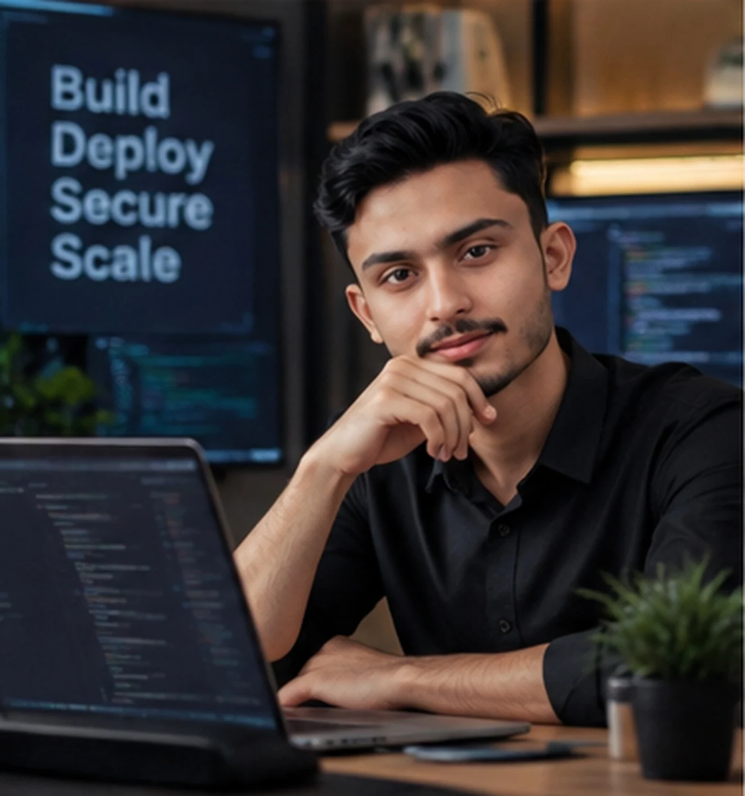

Full-Stack
Development
React, Next.js, Node.js, Express.js, MongoDB, REST APIs and responsive experiences.
BUILT END TO END ↗
Hi, I'm Farhan Ali. I craft thoughtful digital products through full-stack engineering, cloud infrastructure, security and AI.
I build digital experiences that feel as good as they perform.
I'm a freelance MERN Stack Developer and Cloud Engineer, blending secure application architecture with thoughtful design. From commerce platforms and SaaS analytics to voice-controlled AI tools, I connect complex technology with clear, useful experiences.
MORE ABOUT MY JOURNEY ↗From the first line of code to the last layer of infrastructure, every detail matters.
React, Next.js, Node.js, Express.js, MongoDB, REST APIs and responsive experiences.
Google Cloud, Docker, scalable deployment, infrastructure and system reliability.
Cybersecurity principles, secure architecture, ethical hacking and data integrity.
Voice-powered assistants, generative AI integration, Python and speech recognition.
A selection of engineering work across commerce, analytics, AI and cloud architecture.
A full-stack e-commerce platform with secure payment flows and a dynamic management dashboard.
A private SaaS dashboard featuring customer data, revenue analytics, subscriptions and CSV exports.

03 / 04A voice-controlled AI assistant using speech recognition and generative AI technologies.
Containerized a Go application with Docker and deployed it to Google Cloud in 2026.
PROJECT SUMMARIES ARE BASED ON MY RESUME. LIVE DEMO LINKS CAN BE ADDED WHEN AVAILABLE.
Architecting full-stack applications, secure infrastructure and AI-enabled solutions for real-world needs.
Building a reliable Go application, packaging it in Docker and deploying it to Google Cloud.
SUCCESS School and College — continuing formal education while developing technical skills.
Exploring cybersecurity, software engineering, networking and emerging AI technologies through courses and projects.
Credential titles are listed as provided in the resume; verification links can be added when supplied.